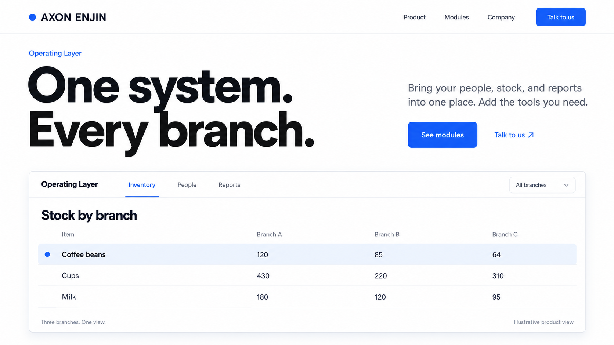
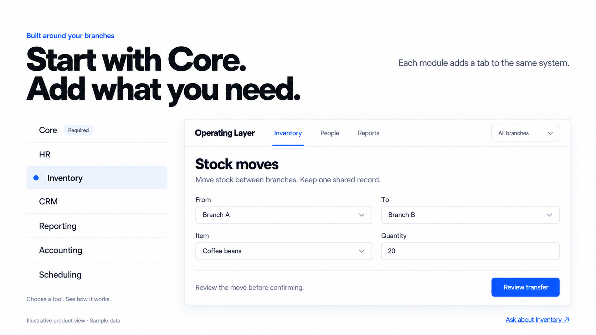
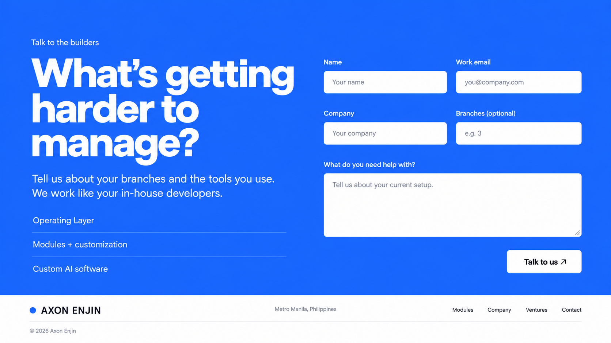

Axon Enjin · Clear signal
Proposed direction: white, charcoal and Axon blue. Broad sentence-case type, concrete product examples and a small blue signal for selected states.
Three image mockups for review. Product data and interfaces are illustrative.


